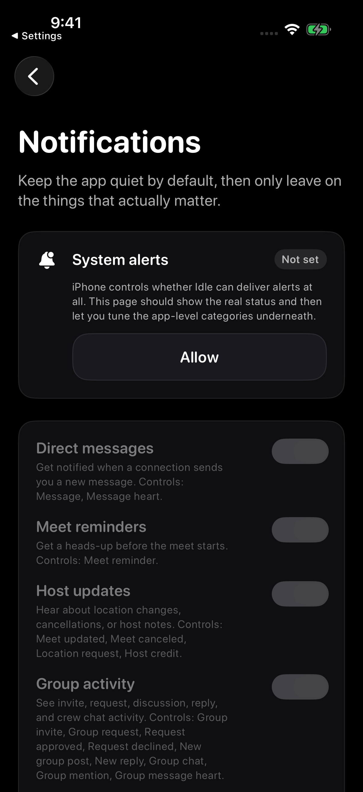
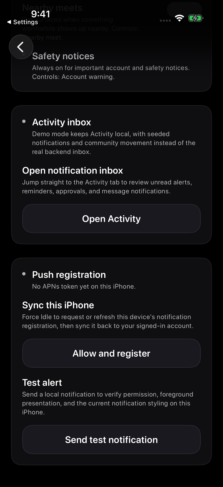

Screenshots show sample content from the Idle test drive in a prerelease build, version 1.3.0 (1), using Dark appearance and Alpine White. Your app may look different. These views show the available controls, without completing a report, block, or notification setup. Learn about the test drive.
Turn on Idle notifications
- Open the iPhone Settings app.
- Tap Notifications.
- Scroll down and tap Idle.
- Turn on Allow Notifications.
- Choose where alerts can appear, such as Lock Screen, Notification Center, and Banners.
- Turn on Sounds or Badges if you want them.
Check Idle notification settings
- Open Idle and go to Settings > Notifications.
- Review System alerts. In the pictured unconfigured state, it says Not set and offers Allow.
- Review the notification categories you want, such as messages, meet reminders, host updates, group activity, Pulse activity, Forum replies, and nearby meets.
- If a test notification option appears, use it to check whether this iPhone can show a local Idle alert.
The screenshot is Idle’s own Notifications page. The iPhone Settings steps above are a separate system setting.


Forum replies and safety notices
Eligible Forum preview users can receive an alert when someone replies directly to their Thread or Reply. Tapping the alert opens the exact Thread. You can turn Forum reply alerts on or off in Idle notification settings. Safety notices stay on so important account information is not missed.
Review group notification preferences
- Open the group you want to adjust.
- Open the group's notification settings when available.
- Tune all group alerts or specific categories such as meets, chat, mentions, and group activity.
- Confirm Idle notifications and iPhone notifications are still allowed if you expect push alerts.
After signing out or switching accounts
Notifications follow the Idle account currently signed in on that iPhone. After switching accounts, open Idle and allow a moment for notification settings to update.
Sync this iPhone
- Open Idle and go to Settings > Notifications.
- Scroll to Push registration.
- Use the registration control shown beneath Sync this iPhone. In the pictured unconfigured state, the button is Allow and register.
- Follow any permission prompt or retry message that appears.
Sync this iPhone is the section heading in this view. The current state determines which registration control is offered.
A local test alert confirms that this iPhone can present an Idle notification. It does not confirm remote notification delivery.


Activity in the test drive
The local test drive uses sample Activity items. Its Activity inbox explanation says those notifications stay local rather than coming from the real backend inbox.
Seeing a sample Activity item does not confirm that a remote notification was delivered to this iPhone.
Check Focus modes
Focus can silence notifications even when Idle notifications are turned on.
- Open iPhone Settings.
- Tap Focus.
- Open the Focus mode you use, such as Do Not Disturb, Driving, or Sleep.
- Check whether Idle is allowed to send notifications during that Focus.
If notifications are delayed
- Review permissions promptIdle may suggest reviewing permissions when location or notifications are off. You can choose whether to enable them.
- Group preferencesA group can have its own alert preferences. Check the group before assuming all Idle notifications are broken.
- Forum reply alertsCheck the Forum replies setting if direct Thread or Reply alerts are missing.
- Scheduled SummaryiPhone can hold some notifications for a later summary instead of showing them right away.
- Low connectionWeak Wi-Fi or cellular service can delay alerts.
- Old app versionCheck the Updates page for the current public release, update Idle from the App Store, then compare it with Idle > Settings > About Idle.
- Recently changed settingsClose Idle fully, reopen it, and give notifications a moment to update.
- Alerts appear tied to an older accountSign into the account you want to use, open Idle Settings > Notifications, and review the Push registration controls under Sync this iPhone. In the pictured unconfigured state, the button is Allow and register.
Still missing notifications?
Email support@idlemeets.com with what notification you expected, when it should have appeared, your iPhone model, iOS version, and whether notifications are enabled in Settings.